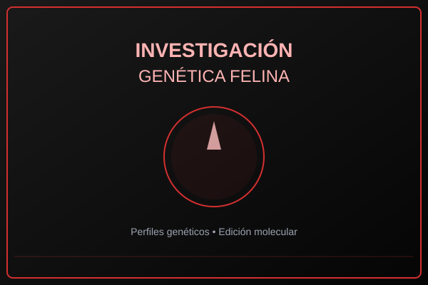
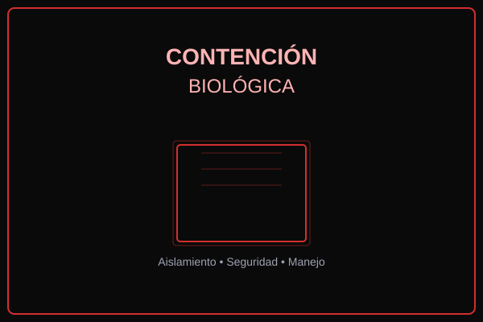
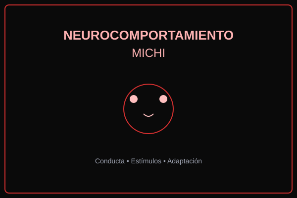

Investigación genética felina
Desarrollo de perfiles genéticos, edición controlada y análisis molecular de especies felinas.
NEKOBRELLA CORPORATION
Servicios
Operaciones enfocadas en investigación avanzada, contención y análisis de comportamiento en sujetos felinos.

Desarrollo de perfiles genéticos, edición controlada y análisis molecular de especies felinas.

Protocolos de aislamiento, barreras de seguridad y manejo seguro de sujetos con niveles de amenaza elevados.

Estudios de conducta, respuestas a estímulos y adaptación de sujetos a entornos experimentales.